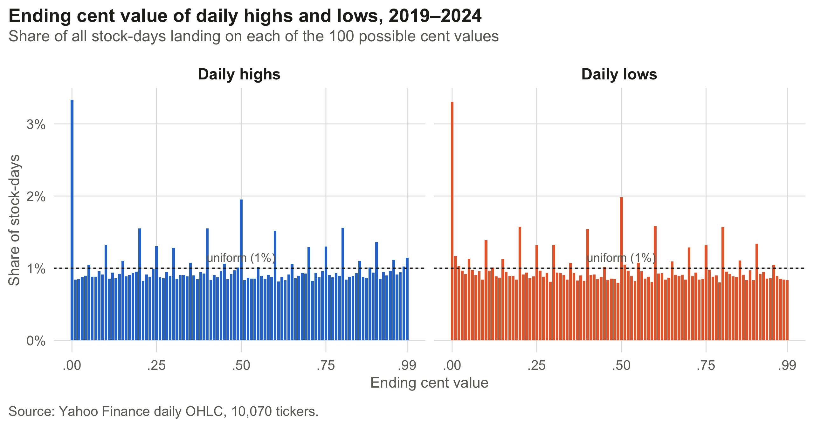
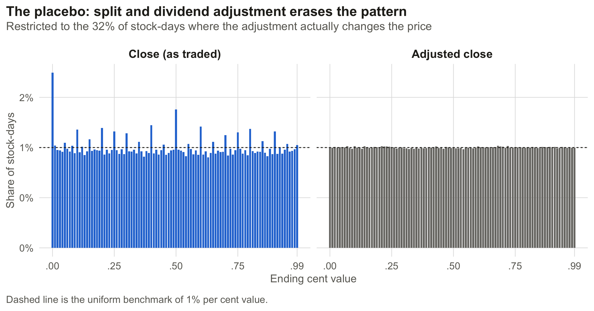
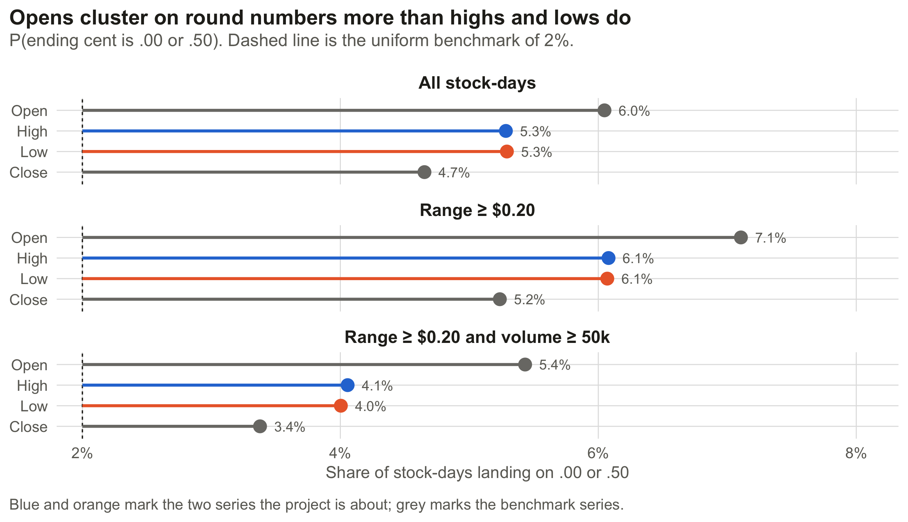
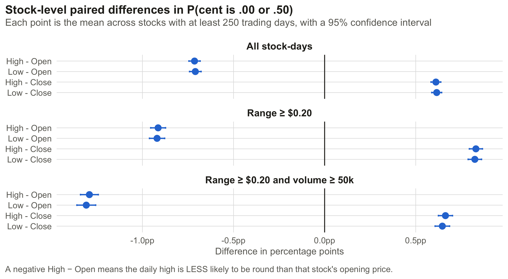
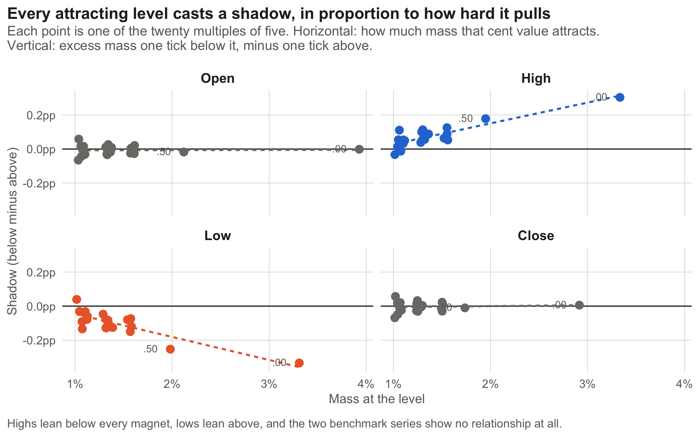
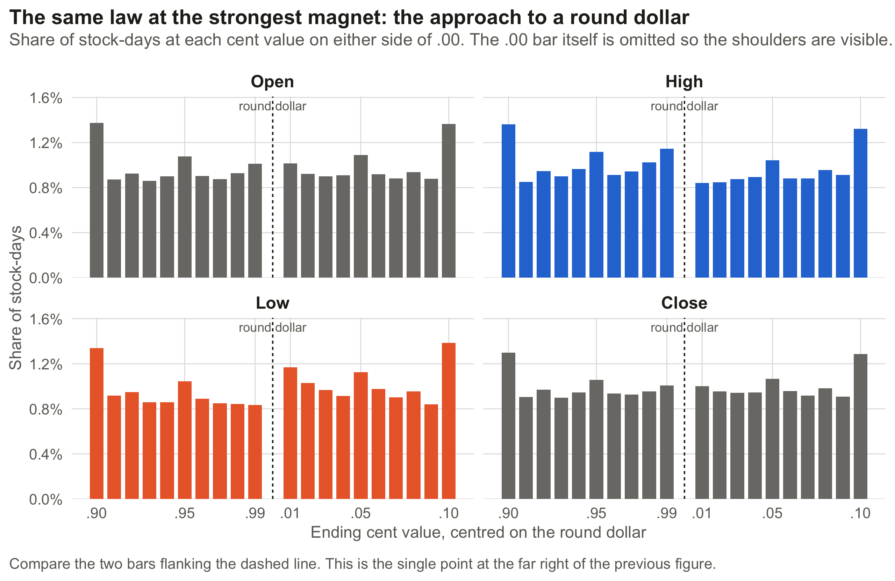

| Measure | Value |
|---|---|
| Stock-days | 9,869,789 |
| Distinct tickers | 10,070 |
| Date range | 2019-10-17 to 2024-10-14 |
| Days where high equals low | 5.3% |
| Days with range under $0.20 | 31.1% |
Shadows in the Stock Market
How resting limit orders shape daily highs and lows
The original project was written in December 2024 with Alan Schulz Diaz for a statistics course. Section 1 reports that work as it stood. Sections 2+ are a 2026 revision, and they are mine alone.
1. Original findings
My partner and I came to this project with one simple question: do cognitive biases show up in the daily highs and lows at which stocks trade? In theory prices should be unpredictable. A trader’s valuation depends on more moving parts than anyone can enumerate. But humans execute the transactions, and we wondered whether the prices they stop at are quietly non-random.
The first idea was to look at the nominal price level. That quickly turned up a dead end. Stocks bunch below $5 simply because there are more small companies than large ones, which is a fact about the listing universe and not about anybody’s head. So we changed the unit of analysis to something the company’s size cannot explain, the cent value. Whether a stock’s daily high ends in .00 or .37, we thought, says much more about individual investors than its market cap.
We pulled daily OHLC data for over 10,000 stocks and nearly 10M stock-days from Yahoo Finance and counted the ending cent value of each day’s high and each day’s low.

The spikes are unmistakable. Highs and lows both pile up at .00 and .50, with smaller peaks at every multiple of ten and at the quarters. A high is more than three times as likely to end in .00 as a uniform distribution over the hundred cent values would predict.
Looking closer, we noticed something subtler that we mentioned almost in passing. Highs and lows peak at round values but they approach those peaks differently. Highs show an extra lump at .99, just below the round dollar. Lows show the mirror image at .01, just above it. We wrote that these looked like support and resistance points, and we moved on.
We worried that thinly traded stocks were driving everything, so we built two Shiny apps to let a reader slice by volume and by individual ticker. The pattern held in every slice.
We concluded that this was evidence of anchoring bias, and handed it in.
What we left on the table
We were really asking two questions at once, and only built the design for one of them.
- Do stock prices cluster on round cent values? The charts above answer this convincingly, and Section 3.1 shows the measurement is sound.
- Do daily highs and lows cluster more than an ordinary price does? This is the question we thought we were answering, and a uniform benchmark cannot answer it. Prices cluster on round numbers all the time, so “more than uniform” and “more than a normal price” are different claims.
Answering the second one needs a control series: prices from the same stocks on the same days that are not extremes. As it happens, we had two sitting unused in the same data file. We also spotted the .99/.01 asymmetry, called it support and resistance, and never tested it.
Section 3 supplies both the control and the symmetry test.
2. The literature
Round-number clustering was news to us, but not the field. Osborne documented it all the way back in 1962; Niederhoffer studied clustering and reversal at daily highs and lows in 1965 and 1966. The canonical modern reference is Harris (1991), which established the ordering clearly visible in our analysis, integers cluster more than halves, halves more than quarters, and proposed the negotiation cost hypothesis: a coarser price grid makes bargaining cheaper, so traders converge on one. Christie and Schultz (1994) noticed Nasdaq market makers avoiding odd-eighth quotes and triggered a Department of Justice antitrust investigation, which is the kind of impact most academics can only dream of. After the SEC forced exchanges to switch to decimal pricing partly as a result of this, Ikenberry and Weston (2008) found that clustering reappeared on nickels and dimes, which they read as evidence for a cognitive attraction story rather than a purely mechanical one.
So the spikes in Section 1 are a replication, not a finding. Everything in that literature is about where prices land, with the exception of Osler (2003), which used actual foreign exchange order data to show that take-profit orders cluster at round numbers while stop-losses cluster just beyond them; a claim about what happens in the immediate neighbourhood of a magnet, not at the magnet itself. That turns out to be what our second chart was showing all along.
3. Updated analysis
3.1 Does the measure work at all?
Before testing anything, a sanity check on the instrument. Yahoo Finance returns both a raw close and an adjusted close. Adjustment multiplies the price by a factor reflecting splits and dividends, which is not a round number. If my digit extraction is measuring something real about the traded price grid, then adjustment should destroy it, driving the distribution to uniform. If instead the spikes are an artifact of how I parse decimal strings, they will survive adjustment untouched.

| Subset | Series | P(cent is .00 or .50) | Stock-days |
|---|---|---|---|
| adjustment applies | Close (as traded) | 3.13% | 3,167,467 |
| adjustment applies | Adjusted close | 2.00% | 3,167,467 |
| no adjustment | Close (as traded) | 5.37% | 6,702,322 |
| no adjustment | Adjusted close | 5.37% | 6,702,322 |
This is as clean as a placebo gets. On the third of stock-days where the adjustment factor actually bites, the adjusted close is round 2.00% of the time against a uniform expectation of exactly 2.00%. On the days where no adjustment applies, the two series are identical to the digit, as they must be. So the measurement is sound, and anyone who ran this analysis on adjusted closes would have found nothing at all, which is a live risk, since yfinance now defaults to returning adjusted prices.
3.2 The benchmark we should have used
The problem with the original design is that a daily high is an order statistic, the maximum over a session, rather than a random draw. If a price level attracts more trading time, it is mechanically more likely to be the day’s maximum, with no behavioral bias at the extreme whatsoever. Comparing it to a flat line tells you that prices cluster. That’s an interesting finding, but it doesn’t shed light on whether the extremes cluster more than prices in general.
The panel already contains a better benchmark. Opens and closes are prices from the same stocks on the same days, but they are fixed-time observations rather than extremes. If highs and lows are special, they should be rounder than opens and closes. If they are not special, they should not be.

That is not the result we reported. The ordering is Open > High ≈ Low > Close, and it holds under every sample restriction. The gap widens when the sample is limited to days where the high and low are genuine extremes rather than a single print.
The inferential version treats the stock as the unit of observation, which handles within-stock dependence without needing clustered standard errors across ten million rows:

Highs are reliably less round than opens, by 0.71 percentage points across all stock-days, widening to 1.29 points among liquid stocks on days with a real trading range. They are modestly rounder than closes. Neither comparison supports the claim that daily extremes are anchored to round numbers in a way that ordinary prices are not.
So the two questions come apart cleanly.
Question one holds. Round-number clustering here is about three times the uniform rate, stable across every price bin and volume bucket, and confirmed by the placebo in 4.1. It also sits squarely in an established literature: Osborne documented it in 1962, and Harris (1991) worked out the full ordering of integers over halves over quarters. Replicating that on a fresh ten-million-row sample is a real result, and it’s the part of the original project that stands.
Question two gets an answer, and the answer is no. Once the control series is in place, daily extremes turn out not to be special. The clustering belongs to stock prices in general, not to highs and lows in particular. We reached for the more interesting of our two claims and stopped one comparison short of being able to evaluate it.
3.3 The shadow law
Here’s what we noticed and misread. We described it as a lump at .99 for highs and .01 for lows, as though those two digits were doing something. But there’s nothing special about .99; it just happens to sit one tick below a round dollar, and what matters is the round dollar.
That reframing turns a curiosity about two cent values into a testable law. If highs stall one tick below wherever resting sell orders sit, then it should not just happen at .00. Every level that attracts orders should show excess mass one tick below it and a deficit one tick above, and the size of that imbalance should scale with how hard the level pulls. So define, for each cent value \(c\):
\[\text{mass}(c) = P(\text{price ends on } c), \qquad \text{shadow}(c) = P(c-1) - P(c+1)\]
and ask whether shadow is a function of mass. Restricting to the twenty multiples of five keeps any level’s neighbors from being magnets themselves.

The relationship is close to linear and it runs in opposite directions for the two extremes. .00 pulls hardest and casts the deepest shadow; .50 is next. The multiples of ten and the quarters line up behind them in order. Opens and closes are flat clouds around zero.
Inference treats the stock as the unit: fit the slope of shadow on mass within each stock across the twenty levels, then average those slopes across stocks. That avoids leaning on twenty correlated level-level points.
| Price type | Mean slope | Median slope | 95% CI | t | Stocks leaning the predicted way | Stocks |
|---|---|---|---|---|---|---|
| Open | 0.0027 | 0.0009 | [-0.0023, 0.0077] | 1.1 | 50.6% | 8,995 |
| High | 0.0748 | 0.0637 | [0.0684, 0.0813] | 22.8 | 64.1% | 8,995 |
| Low | -0.0780 | -0.0670 | [-0.0840, -0.0719] | -25.2 | 63.4% | 8,995 |
| Close | 0.0037 | 0.0016 | [-0.0024, 0.0097] | 1.2 | 51.1% | 8,995 |
Highs and lows are strongly signed and opposite. Opens and closes have confidence intervals straddling zero and sit at 50.6% and 51.1% in the last column. Coin flips, exactly what a series with no barrier should do.
Zooming in on the strongest magnet shows what the law looks like at one level:

Across all stock-days a daily high is 1.38 times more likely to end in .99 than .01, and a daily low 1.40 times more likely to end in .01 than .99. Restricting to days with a real trading range strengthens both to about 1.51 and 1.56. That is the right direction for a real mechanism, more room in the day’s range means more chances for a barrier to bind, and the wrong direction for most artifacts, which get diluted rather than sharpened when you restrict to cleaner observations.
And this was actually quite visible in our original graphs. If you go back to the figure in Section 1 and look at the base of each spike rather than the spike itself, you’ll see that in the highs panel the bar immediately left of every peak stands slightly taller than the bar immediately right. In the lows panel it’s reversed. At the time, I thought this was a curious pattern but wasn’t quite sure what to make of it, and finals diverted my attention. I’m glad I found the time to come back and take another look.
The mechanism at play is sell orders resting at a round dollar stop an advance one tick short, so the high prints just below. Buy orders resting there halt a decline one tick above, so the low prints just above. The stronger the level’s pull, the more orders sit on it, and the deeper the shadow, which is the slope in the table. Osler (2003) established this structure in foreign exchange with actual order book data; here is a duplication of her finding in US equities, recoverable from freely accessible data.
It also explains why the benchmark series are null. Opens and closes are set by auctions, where a resting limit order is one input to a single clearing price rather than a wall that price has to climb through. Only a continuously traded extreme has to get past the book.
Does split adjustment drive it?
One feature of the data needs checking before any of this can stand. The OHLC series returned by Yahoo Finance are back-adjusted for corporate actions. A 4:1 split divides every earlier price by four, which lands it on a quarter-cent grid, and the cleaning script then rounds it back into pennies. Apple’s high on the first day of the sample reads 59.0375, representing the $236.15 it actually traded at, divided by a split that would not happen for another ten months. On those rows the cent digit is a rounding of a price that never traded at that cent.
Splits are not the only culprit. Spin-offs adjust the same way with untidier factors: 3M and IBM are both heavily affected and neither split during the window. Regular dividends, on the other hand, leave these columns alone. Coca-Cola, Johnson & Johnson, Exxon, Procter & Gamble and Chevron sit exactly on the penny grid for all 1,256 days.
About 12% of stock-days carry an adjusted price. To be clear, that is not a 12% rate of corporate actions: one event back-adjusts a ticker’s entire prior history, so a single split in 2024 flags four years of that stock’s days. Nor is it rounding noise, as 97% of the affected prices sit more than a twentieth of a cent off the grid, and two thirds land within a hundredth of a cent of a simple fraction, which is exactly what dividing by a split ratio produces.
So the whole thing is re-estimated on the clean subset: stock-days where all four of open, high, low and close sit exactly on the penny grid in the raw feed, before any rounding. That’s 77.6% of the panel and 7,793 stocks. Reading in this brobdingnagian dataset was irritating, but it’s certainly worth it to be able to do this kind of filtering without a second thought.
| Price type | Full sample | Clean, mean | Clean, median | 95% CI | t | Leaning the predicted way |
|---|---|---|---|---|---|---|
| Open | 0.0027 | 0.0072 | 0.0006 | [0.0019, 0.0125] | 2.6 | 50.5% |
| High | 0.0748 | 0.0802 | 0.0672 | [0.0731, 0.0873] | 22.1 | 65.1% |
| Low | -0.0780 | -0.0882 | -0.0741 | [-0.0948, -0.0815] | -26.1 | 65.5% |
| Close | 0.0037 | 0.0026 | 0.0011 | [-0.0047, 0.0098] | 0.7 | 50.8% |
And to my relief, the effect is stronger on clean rows: from 0.075 to 0.080 for highs and from -0.078 to -0.088 for lows. This makes sense because rounding a quarter-cent price into a penny scrambles the digit, and scrambled digits pull an estimate toward zero rather than away from it.
Something else that caught my eye was that on the clean subset the mean slope for opens becomes distinguishable from zero (t = 2.6), which is a higher t than closes get — yet fewer opens lean the predicted way than closes do (50.5% against 50.8%).
The explanation is that the two statistics are measuring different things, and the per-stock slope estimates are badly skewed with only twenty points to fit from. Opens are skewed right (+2.3), which pulls the mean up while leaving the bulk of the distribution at zero. Closes are skewed hard left (−13.2), which drags their mean back toward zero even though marginally more than half of them sit just above it. Opens also have the tighter spread of the two, so the same nudge in the mean buys a much larger t.
The median settles it. Opens sit at 0.0006 and closes at 0.0011, against 0.0672 for highs, which is two orders of magnitude apart. The typical benchmark stock has no shadow at all; a thin right tail of opens is doing the work in that t-statistic. Where the mean and the median disagree this sharply, the median is the statistic to believe.
3.4 Potential confounds
We were right to worry that price level and thin trading were doing work. Both matter enormously for the level of clustering.
| Price bin | Stock-days | Open | High | Low | Close |
|---|---|---|---|---|---|
| <$1 | 160,592 | 3.0% | 3.3% | 2.1% | 3.6% |
| $1-5 | 959,090 | 3.8% | 3.5% | 3.8% | 3.3% |
| $5-10 | 990,692 | 5.1% | 4.7% | 4.6% | 4.2% |
| $10-25 | 2,777,207 | 5.1% | 4.6% | 4.6% | 4.1% |
| $25-50 | 2,596,240 | 4.7% | 4.0% | 4.1% | 3.4% |
| $50-100 | 1,410,185 | 6.2% | 5.1% | 5.1% | 4.3% |
| $100-250 | 716,665 | 9.9% | 7.9% | 7.9% | 6.7% |
| $250-1k | 202,151 | 21.3% | 18.3% | 18.5% | 16.5% |
| >$1k | 56,919 | 68.7% | 66.6% | 66.9% | 65.3% |
| Median daily volume | Stock-days | Open | High | Low | Close |
|---|---|---|---|---|---|
| 0-10 thousand | 2,264,201 | 8.9% | 8.7% | 8.7% | 8.1% |
| 10 thousand-100 thousand | 2,864,302 | 5.8% | 5.5% | 5.6% | 4.7% |
| 100 thousand-1 million | 3,143,346 | 4.7% | 3.6% | 3.6% | 3.1% |
| 1 million-10 million | 1,457,210 | 5.2% | 3.3% | 3.1% | 2.8% |
| Above 10 million | 140,730 | 4.5% | 3.0% | 2.8% | 2.6% |
Clustering rises from about 4% in the $25–50 range to 67% above $1,000 a share, where a penny is economically meaningless. Liquidity runs the other way, and for highs and lows it runs cleanly: clustering falls from 8.7% in the thinnest bucket to 3.0% among stocks trading more than ten million shares a day, dropping at every step. We were right to worry that thin trading was impactful, so any future version of this has to stratify on both price and volume.
What matters for the argument is that the ordering is stable inside every stratum. Opens stay rounder than highs and lows in every price bin and every volume bucket. The conclusion in 3.2 is not a composition effect.
3.5 Limitations
The price feed is float32. Raw values carry about seven significant digits, so the error is roughly a hundredth of a cent at $100 a share and a tenth of a cent at $1,000. That is comfortably finer than a penny, so the cent digit is safe here. However, as I’ll get to in a moment, it might cause problems for a similar analysis in a couple of months.
Opens and closes are auction prints. They are the best benchmark available in daily data, but they are not neutral. Closing auctions carry index rebalancing and marking-the-close pressure, and opening auctions resolve overnight order imbalance. The ideal benchmark is each stock-day’s own intraday print distribution, but that comes from less accessible trade-level data.
None of this is tradable. The asymmetry is real and it is large in relative terms, but the quantity in play is one cent on a limit order, meaning its practical value is in execution rather than prediction. For example, a resting order at $X.00 sits behind a much longer queue than one at $X.01. It was a lot easier to game an edge in increments of quarters in the ’90s than in pennies today; suffice to say that I don’t feel like I’m giving up a gold mine by making this analysis public. Prove me wrong, I suppose.
4. Conclusion and next steps
My partner and I set out to ask whether round numbers show up in the prices people actually trade at, and whether daily highs and lows are drawn to them especially. With a control series and a proper test that the original design did not have, here is where that lands.
Round-number clustering is real, large, and well-established. Prices land on .00 or .50 roughly three times as often as chance predicts, the effect holds in every price bin and every volume bucket, and the adjusted-close placebo confirms the measurement is picking up the traded price grid rather than an artifact of how the digits are parsed. This is a clean replication on ten million stock-days of something Osborne noticed in 1962 and Harris formalized in 1991.
Daily extremes are not the driver. Once opens and closes are used as a control, highs and lows turn out to be slightly less round than an ordinary price from the same stock on the same day. The clustering belongs to stock prices generally.
What extremes actually do is stop one tick short. Every attracting cent value casts a shadow: excess mass one tick below it for highs, one tick above it for lows, scaling linearly with how hard that level pulls. The within-stock slope is 0.075 for highs and -0.078 for lows, against a slope statistically indistinguishable from zero for both benchmark series. That’s not anything special about the digits .99 and .01, it’s a general property of how a continuously traded extreme meets a wall of resting orders, and it’s the price-level signature of the structure Osler (2003) found in foreign exchange order books.
Future work
The easiest update would be to switch opens and closes to the more neutral control of intraday print distribution. That would also make it possible to test the mechanism directly by measuring queue depth at a level and see whether it predicts that level’s shadow, instead of inferring the book from the prices it leaves behind.
There is also a reason to return to this specific question with new data. On November 2 the minimum pricing increment drops from a penny to half a penny for NMS stocks whose time-weighted average quoted spread sits at or below $0.015, while everything else stays on pennies. Since the shadow is defined in ticks, a finer tick is a natural way to check the law still describes the data, and, more interestingly, what happens to the slope. If a half-penny grid splits the queue that used to sit at .00 across two price points, each wall is thinner and easier to push through, and the slope should fall. If the same orders stay concentrated on the same salient price, it should hold. On the basis of this analysis, I’d put good money on the former.
If I have time, I’ll write up a sequel making this prediction firm, and then testing it once enough data accrues. Until then, happy investing!
Reproducing this
| File | Purpose |
|---|---|
| code/01_build_aggregates.R | One pass over the 9.9M-row panel; writes the small summary tables this report reads. |
| code/02_split_robustness.R | Re-estimates the shadow law on stock-days untouched by corporate-action adjustment; produces the comparison in 3.3. |
| data/aggregates/ | Those tables. Every figure and number above traces to one of them. |
| stock_analysis.qmd | This document. |
Rscript code/01_build_aggregates.R
Rscript code/02_split_robustness.R
quarto render stock_analysis.qmdReferences
Claude Code assisted with coding, formatting and analysis.
- Christie, W. and Schultz, P. (1994). Why do NASDAQ market makers avoid odd-eighth quotes? Journal of Finance 49(5).
- Harris, L. (1991). Stock price clustering and discreteness. Review of Financial Studies 4(3).
- Ikenberry, D. and Weston, J. (2008). Clustering in US stock prices after decimalisation. European Financial Management 14(1).
- Niederhoffer, V. and Osborne, M. F. M. (1966). Market making and reversal on the stock exchange. Journal of the American Statistical Association 61(316).
- Osborne, M. F. M. (1962). Periodic structure in the Brownian motion of stock prices. Operations Research 10(3).
- Osler, C. (2003). Currency orders and exchange rate dynamics. Journal of Finance 58(5).
- SEC Release 34-101070, Regulation NMS: Minimum Pricing Increments, Access Fees, and Transparency of Better Priced Orders (18 September 2024), and the exemptive order of 31 October 2025.